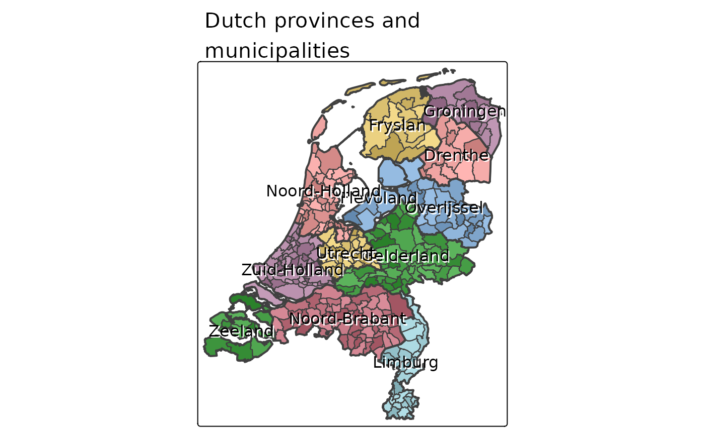

Color the polygons of a map such that adjacent polygons have different colors
Usage
map_coloring(
x,
algorithm = "greedy",
ncols = NA,
minimize = FALSE,
palette = NULL,
contrast = 1
)Arguments
- x
Either a shape (i.e. a
sforSpatialPolygons(DataFrame)(sppackage) object), or an adjacency list.- algorithm
currently, only "greedy" is implemented.
- ncols
number of colors. By default it is 8 when
paletteis undefined. Else, it is set to the length ofpalette- minimize
logical that determines whether
algorithmwill search for a minimal number of colors. IfFALSE, thencolscolors will be picked by a random procedure.- palette
color palette.
- contrast
vector of two numbers that determine the range that is used for sequential and diverging palettes (applicable when
auto.palette.mapping=TRUE). Both numbers should be between 0 and 1. The first number determines where the palette begins, and the second number where it ends. For sequential palettes, 0 means the brightest color, and 1 the darkest color. For diverging palettes, 0 means the middle color, and 1 both extremes. If only one number is provided, this number is interpreted as the endpoint (with 0 taken as the start).
Examples
if (require(tmap) && packageVersion("tmap") >= "2.0") {
data(World, metro)
World$color <- map_coloring(World, palette="Pastel2")
qtm(World, fill = "color")
# map_coloring used indirectly: qtm(World, fill = "MAP_COLORS")
data(NLD_prov, NLD_muni)
tm_shape(NLD_prov) +
tm_fill("name", legend.show = FALSE) +
tm_shape(NLD_muni) +
tm_polygons("MAP_COLORS", palette="Greys", alpha = .25) +
tm_shape(NLD_prov) +
tm_borders(lwd=2) +
tm_text("name", shadow=TRUE) +
tm_format("NLD", title="Dutch provinces and\nmunicipalities", bg.color="white")
}
#> old-style crs object detected; please recreate object with a recent sf::st_crs()
#> old-style crs object detected; please recreate object with a recent sf::st_crs()
#> old-style crs object detected; please recreate object with a recent sf::st_crs()
#> old-style crs object detected; please recreate object with a recent sf::st_crs()
#> old-style crs object detected; please recreate object with a recent sf::st_crs()
#> old-style crs object detected; please recreate object with a recent sf::st_crs()
#> old-style crs object detected; please recreate object with a recent sf::st_crs()
#> old-style crs object detected; please recreate object with a recent sf::st_crs()
#> old-style crs object detected; please recreate object with a recent sf::st_crs()
#> old-style crs object detected; please recreate object with a recent sf::st_crs()
#> old-style crs object detected; please recreate object with a recent sf::st_crs()
#> old-style crs object detected; please recreate object with a recent sf::st_crs()
#> old-style crs object detected; please recreate object with a recent sf::st_crs()
#> old-style crs object detected; please recreate object with a recent sf::st_crs()
#> old-style crs object detected; please recreate object with a recent sf::st_crs()
#> old-style crs object detected; please recreate object with a recent sf::st_crs()
#> old-style crs object detected; please recreate object with a recent sf::st_crs()
#> old-style crs object detected; please recreate object with a recent sf::st_crs()
#> old-style crs object detected; please recreate object with a recent sf::st_crs()
#> old-style crs object detected; please recreate object with a recent sf::st_crs()
